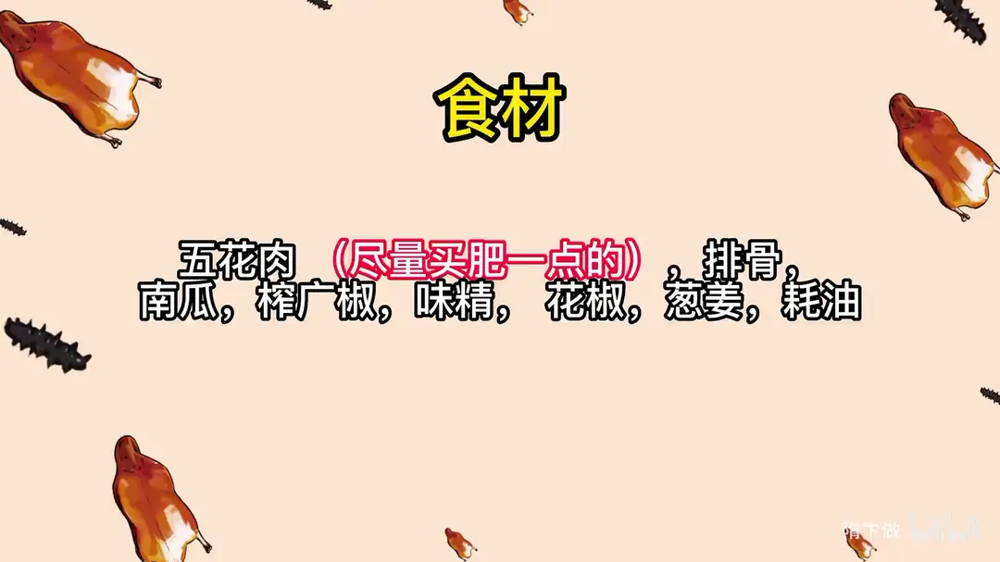
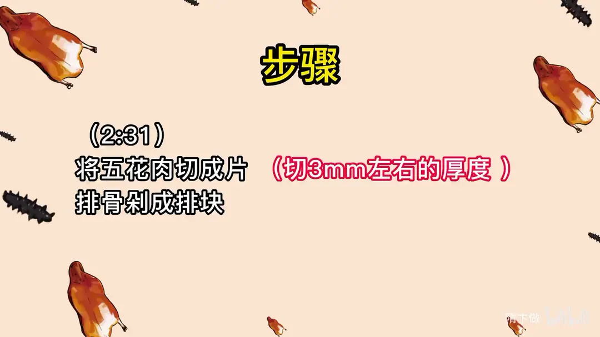
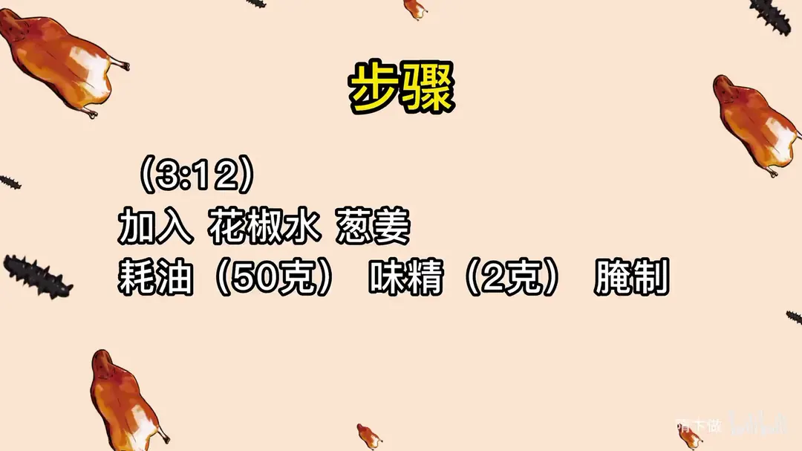
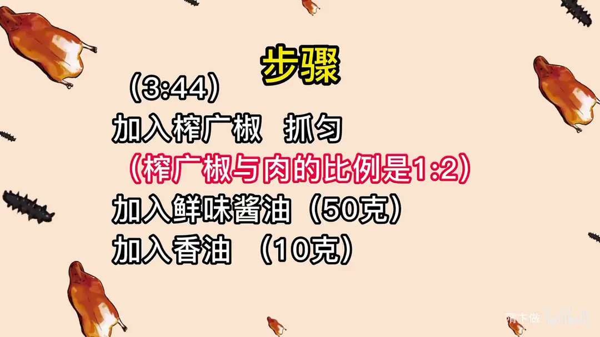
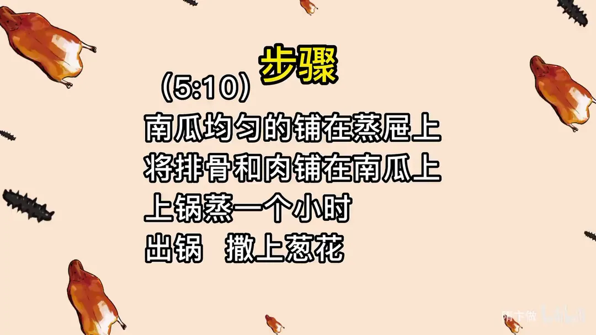

抬格子
隋卞一做。土家族的抬格子：五花肉切 8mm 厚片、排骨剁块，用花椒水、葱姜、蚝油、味精腌过，拌上榨广椒和鲜味酱油，铺在南瓜上蒸一小时，出锅撒葱花。
原视频：https://www.bilibili.com/video/BV1rDZiYoEX6
食材
五花肉、排骨、南瓜 等 11 样
| 类别 | 用料 | 用量 |
|---|---|---|
| 主料 | 五花肉（尽量买肥一点的） | 适量 |
| 主料 | 排骨 | 适量 |
| 垫底 | 南瓜 | 适量 |
| 腌制 | 花椒水 | 适量 |
| 腌制 | 葱姜 | 适量 |
| 腌制 | 蚝油 | 50g |
| 腌制 | 味精 | 2g |
| 拌料 | 榨广椒 | 适量（与肉的比例 1:2） |
| 拌料 | 鲜味酱油 | 50g |
| 拌料 | 香油 | 10g |
| 出锅 | 葱花 | 适量 |
步骤
- 切肉：将五花肉切成片，厚度 8mm 左右；排骨剁成排块。
- 腌制：加入花椒水、葱姜、50g 蚝油、2g 味精，腌制。
- 拌榨广椒：加入榨广椒抓匀，榨广椒与肉的比例是 1:2。
- 调味：加入 50g 鲜味酱油、10g 香油，拌匀。
- 铺屉：南瓜均匀地铺在蒸屉上，将排骨和肉铺在南瓜上。
- 上锅蒸：上锅蒸一个小时。
- 出锅：出锅撒上葱花。
讲解要点
难度：★★★☆☆（难点是买对榨广椒，以及全程少加盐——蒸的时候水会出来）
为什么这么做
- 五花肉买肥一点：要蒸一个多小时，肥油会被蒸出来渗到粉里，肉不腻、粉才香，太瘦的蒸完发柴。
- 肉先燎毛刮净，五花切 8mm 厚片、排骨剁成排块：皮上的毛茬不处理会带腥；蒸的时间长，这个厚度蒸完刚好糯而不散。
- 先加葱姜、花椒水、蚝油、味精抓匀：这是给肉打底味、去腥的阶段，抓完闻一下是肉香、葱香还是腥味，差什么补什么。
- 花椒水宁少勿多、盐一定要少：腌进去的水和盐，蒸的时候还会随汤汁出来，加多了成品出水、不干爽。
- 榨广椒和肉 1:2、最后拌香油：粉太多会干、会发酸，这个比例让每片肉都裹上一层红黄的粉壳；香油则是柔和榨广椒的酸味、把香味提起来。
- 南瓜垫底、蒸一小时：南瓜接住蒸出来的猪油和肉汁，甜软解腻；五花肉带筋带皮，一小时才烂，粉也才熟。
容易翻车
- 榨广椒分玉米和大米两种，湖北吃到的是玉米做的，玉米版颜色和味道更正，买的时候先尝。
- 榨广椒没有经过发酵的只有辣和面味，发酵过的才有那股酸香，挑选时闻味道比看颜色准。
- 肉拌好后如果感觉偏干，可以补一点花椒水，但盐别再补。
- 家里没有砍刀剁排骨，顺着关节掰开就行，别硬砍。
- 蒸足时间再掀盖，中途开盖蒸汽跑了肉就发韧。
原片尾卡





原片文案
AI 字幕校准稿
这个菜绝对是我今年最喜欢的菜之一了，太好吃了。说实话，离开湖北很久了，还是忘不了那个味道。
外边是黄颜色，应该是棒子面儿，然后混上辣椒、花椒，吃着咸鲜微辣。选料也特别好，又有麻又有辣，但是它盖不住粉的香和猪肉本身的那个香味。
像这种菜呢，地域性可能也强。他们里边这个叫榨广椒，在北京是没有发现做这个的，我也不知道是不是这个天气不适合，反正确实没有。然后我们就只能淘宝买了，今天你们跟我一块把它搞出来。
在某宝上直接买了三家，咱们先来尝一下。这个就是玉米面把那个剁辣椒一拌，没有经过发酵。下一个，这个是有点发酵的味道了，这是大米的。我记得我们在湖北吃的是玉米的，不是大米的，这个颜色可能会更正。三个来讲，这个味道是比较接近的，颜色也好，其他的放一边了。榨广椒咱们就选完了。
下面咱们开始切肉。五花肉买回来之后先把毛燎了，燎完刮干净。这个买五花肉尽量买得稍微肥一点，因为蒸的时间很长，它会把里面的油蒸出来。厚度大约切 8mm 左右。
排骨，家里边没有砍刀没关系，掰一下，拉关节都开了，很简单。排骨呢就剁成排块。
葱姜、花椒水、蚝油，首先咱们把所有的料加进去之后，得先闻一下它到底是肉香味、肉腥味，还是葱香味。这个厨师的嗅觉一定要好，味觉也一定要好，眼睛还要好，六路耳听八方，品其百味都得管用。
这就稍微有点干了，刚才也能加点花椒水，可以再补一点。千万要少加盐，水加多了，一会儿蒸熟它还会出来，蒸完就没有那么干爽了。你看压完了，这里开始往上，上面都有。
最后一步加入香油。这个香油呢主要是为了柔和这个酸味，跟其他味主要起到增香的作用。你闻闻，有点这意思，这是真的。就差这点灵魂的香油，它就有那味儿了。所以我们做饭非常快乐。
把南瓜铺上，把肉摆上边。锅里边放上水，咱们把它蒸上。到点了，行不行？就这掀盖了啊。
兄弟很像很像啊。好辣，这个肉真的都粘一块了。这质感还稍微有一点点酸呢。这个榨广椒辅助它自己的发酵，时间可能跟咱们吃的时候好像不太一样，它这种发酵的时间稍微再长一点，然后回口是有点酸的。他这个榨广椒里面又有玉米面那种粮食的香味，有肉本身那种脂肪的香。
别说我现在边流哈喇子了。他那一点点酸味，又把那个肥肉里面那个腻给中和了。太好吃了，这个菜绝对是我今年最喜欢的菜之一了。它已经完全把那个辣椒、酸香麻辣全部蒸到肉里面去了。